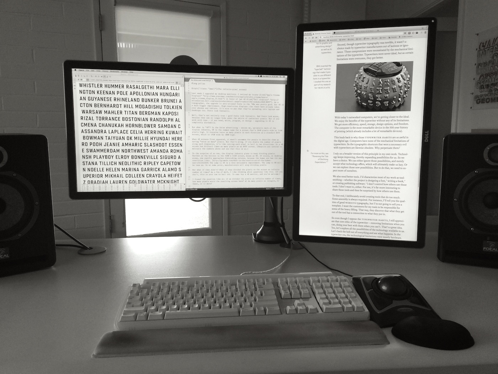
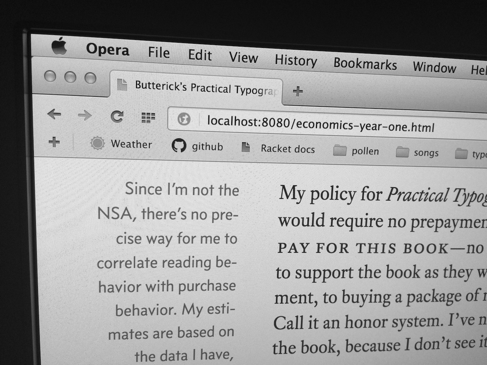

Last week I upgraded my desktop monitors. I retired my trusty Apple Cinema Displays in favor of two 4K Dell monitors. As a typographer, the upgrade from black & white to grayscale fonts in the ’90s was pretty good. But 4K is much better.
High-resolution displays like these have already taken over phones and tablets. It’s nice to see that they’re spreading into laptops and desktops too.

Fonts look fantastic.

Well, that’s not entirely true. Good fonts look fantastic. Bad fonts look worse, because they can no longer hide behind the indistinct edges of coarser pixels. But if you work with type—as a reader, writer, programmer, or designer (which I guess covers just about everyone)—then upgrading to 4K is completely worthwhile.
To the surprise of no one, the display industry plans to keep dividing pixels. Farther on the horizon is the 7680 × 4320 screen, known as 8K. Of course, at desktop sizes, one rapidly approaches diminishing returns, because the human eye has its own resolution limit. The jump to 4K is a very noticeable improvement. The jump to 8K will be less so. At some point, manufacturers will stop dividing pixels.
But what if they didn’t? What if they divided the pixels on the screen an infinite number of times? How many pixels would the resulting screen have?
a) As many pixels as positive integers.
b) Fewer.
c) More.
As a fan of math, I like thinking about questions like this. (If you don’t, you can bail out now. In sum: buy a 4K monitor, and you’re welcome.)
The first thing that might give you pause is the implication in option (c) that we can have a quantity of pixels that’s greater than the number of positive integers. Aren’t the integers infinite? And isn’t infinity, like, as far as you can go?
Turns out the answer is no. For this result, we can thank the German mathematician Georg Cantor. When Cantor started his work in the 1860s, infinite numbers had been used in mathematics for hundreds of years. But there was always a bit of mystery and handwaving about what they really were. Cantor cleared away the fog.
One question Cantor studied is whether all infinite sets are the same size, or if some are bigger. But how do you compare infinite sets? If we had finite sets, we’d know how to compare them: just count the elements. Whichever set has more elements is bigger. But with infinite sets, counting takes too long.
So what do we do? We can’t count infinite sets directly. But suppose further that we couldn’t count finite
This quantity of elements in a set is also called the cardinality of the set. How is cardinality useful? If we have a set with a certain cardinality, we can use it to measure other sets by matching up the elements of one set to the elements of the other. If the two sets have a one-to-one correspondence between elements, then they must have the same cardinality.
For instance, suppose we want to measure the cardinality of the set of toes on our foot. We notice that we can touch each finger on our hand to each toe on our foot. Thus we can conclude that fingers and toes have the same cardinality.
That’s a rudimentary example. What if I gave you two bags of objects and asked whether they contained the same number of objects? Again, without counting. You could take an item out of both bags until you exhausted the supply of one bag. If the other bag was simultaneously empty, then you’d know they had the same cardinality. This would work regardless of how many items were in the bag.
Bijection is a simple idea. But it’s an important tool because it helps keep us out of the counterintuitive weeds when working with infinite sets. For instance, we can now figure this out: are there more positive integers {1, 2, 3, ...} or even integers {2, 4, 6, ...}? The naive answer would be that there must be more positive integers, because the set of positive integers includes both the even and odd integers.
But this is wrong. Using bijection, we see that we can put the positive integers and even integers into a one-to-one correspondence like so:
1, 2, 3, 4, ...
2, 4, 6, 8, ...
No matter how far we go, we can always find the element in one set that corresponds to the element in the other. That’s the bijection. Thus, the cardinality of these two infinite sets is the same. There are just as many positive integers as even integers. It sounds a little weird at first, but we just proved it.
To show that two infinite sets are the same size, you have to find a bijection. But to show that one infinite set is bigger than the other, you have to prove something more difficult: that no bijection can exist.
But Cantor proved this was possible too. One of his methods, the diagonalization argument, is singularly lovely, and goes like this.
Cantor started by considering an infinite string of binary digits like so:
10010101001011101010 ...
Then he thought about the set of all such strings:
10010101001010101010 ...
01001010100101001001 ...
10010011110001001000 ...
...
Then he asked: how many of these strings exist? Clearly, it’s an infinite number. And it looks like we might be able to find a bijection with the positive integers by just listing them all out in some systematic way:
1: 10010101001010101010 ...
2: 01001010100101001001 ...
3: 10010011110001001000 ...
4: ...
If that bijection works, then the set of infinite binary strings has the same cardinality as the positive integers.
But here comes Cantor’s jiu-jitsu move. He points out that if you take the nth digit from each string and flip it (from 0 to 1 or 1 to 0), you’ll end up with a new string:
1: 10010101001010101010 ... 001 ...
2: 01001010100101001001 ...
3: 10010011110001001000 ...
4: ...
Obviously, this new string is itself an infinite binary string. So it belongs to our set. But it’s not in the bijection. How do we know this? Because of how we constructed it: the new string differs from every string already in the bijection by at least one digit.
In other words, given any attempt to match up these infinite binary strings with the positive integers, you can always construct another string that’s not in the bijection. Therefore, there can be no bijection between the positive integers and these infinite binary strings. Though both sets are infinite, the set of infinite binary strings is really, truly bigger.
To be more precise, the cardinality of the set of infinite binary strings is greater than the cardinality of the set of positive integers. These two infinite cardinalities surface often enough that they have their own names. Sets that share the cardinality of the positive integers are called countably infinite; sets that share the cardinality of the infinite binary strings are called uncountably infinite.
Suppose we start with a screen that’s one giant pixel:
In step 1, we cut the pixel in half horizontally:
In step 2, we cut it in half vertically:
In step 3, we cut each new pixel horizontally:
In step 4, we cut them vertically:
And so on. You can see that each round of cutting will correspond to a positive integer, creating a bijection with a countably infinite set.
So how many pixels remain at the end? It should be clear that we have infinite pixels. Moreover, having made countably infinite rounds of cuts, the intuitive answer might be that we also have a countably infinite number of pixels.
Or do we? Is it possible that we have more pixels—an uncountably infinite set of pixels? As before, we can figure this out by asking whether we can create a bijection betweeen our pixels and some uncountably infinite set.
We have such a set. We already established that Cantor’s infinite binary strings were uncountably infinite:
10010101001010101010 ...
01001010100101001001 ...
10010011110001001000 ...
...
In step 1, we made a horizontal cut. So if the first digit in our string is 0, we’ll choose the top half of the pixel. If 1, we’ll choose the bottom half.
0... |
1... |
In step 2, we made a vertical cut. So if our second digit is 0, we’ll choose the left half of the pixel. If 1, we’ll choose the right half.
00... | 01... |
10... | 11... |
Now we just repeat this process: letting alternating numbers in the string indicate top vs. bottom, then left vs. right. After step 4:
0000... | 0001... | 0100... | 0101... |
0010... | 0011... | 0110... | 0111... |
1000... | 1001... | 1100... | 1101... |
1010... | 1011... | 1110... | 1111... |
As we continue, the cells will get smaller, and the binary strings will get longer. Eventually—meaning, at the end of this countably infinite process—we’ll have a one-to-one correspondence between every pixel and every infinite binary string. In other words, we will have defined a bijection. And since the infinite binary strings are uncountably infinite, so are the pixels. Therefore, we have more pixels than positive integers.
The first release of this article ended here. In an impressively efficient display of Cunningham’s Law, several readers wrote to say that my reasoning was faulty. The infinite-pixel screen contains only a countably infinite number of pixels.
I’ll concede that this is so.
To see why, let’s first find the flaw in my previous demonstration. I claimed that my pixel-cutting technique would let us associate any infinite binary string with a pixel.
A couple readers tried to find a contradiction using Cantor’s diagonalization argument, saying that there should be a way to construct a new infinite binary string that doesn’t map to a particular pixel. But there’s no way to do this.
Why? Because the problem with my proposed bijection is not that it fails to map every infinite binary string, but that it fails to map any of them.
Even though each of our binary strings is infinite in length, it represents an exact number—a specific point on the screen. This shouldn’t alarm you. For instance, recall from seventh-grade math that the exact fraction one-third can be found on the number line between 0 and 1. But the decimal expansion of this fraction is the infinite decimal 0.333... As we add digits to the decimal—0.3, 0.33, 0.333, 0.3333—we get ever closer to one-third. And though one-third is certainly the limit
Likewise, the pixels in my construction represent approximations of infinite binary strings, which are the limits of these approximations. But just as there’s no way to follow 0.333... until you reach exactly one-third, there’s no way to carve a pixel until you get to the exact point represented by a certain infinite binary string. So the premise behind my proposed bijection was faulty. I tried to fudge that which could not be fudged.
Having adopted the idea that every pixel is an approximation, we can use the construction to recount the pixels. This time, let’s label our original pixel with the digit 1:
1 |
Then we’ll append a binary digit each time we split the current pixels, the same way as before:
10 |
11 |
100 | 101 |
110 | 111 |
Skipping to step 4:
10000 | 10001 | 10100 | 10101 |
10010 | 10011 | 10110 | 10111 |
11000 | 11001 | 11100 | 11101 |
11010 | 11011 | 11110 | 11111 |
In so doing, we can associate every pixel at every level of the construction with a unique integer. (You can interpret the numbers above as binary or decimal—same result.) Of course, the total number of pixels is still infinite, since the doubling goes on forever. But any infinite subset of the positive integers can be put into bijection with the positive integers (like the example of even integers vs. positive integers earlier). So there are only as many pixels as integers.
What about those infinite binary strings? We now see that there are more of those (because they’re uncountably infinite) than pixels in our screen (because those are countably infinite). But is there a way to relate these two kinds of infinite cardinality within this pixel construction? I say yes. (OK, I’ve been wrong before.)
Cantor’s Theorem—he discovered several theorems, but this is the eponymous one—says that for any set of items, the set of subsets of items is always bigger (i.e., has greater cardinality). With a small set, this is easy to see. The three-element set {x, y, z} has eight subsets: {x}, {y}, {z}, {x, y}, {x, z}, {y, z}, {x, y, z} itself, and {}, the empty set. This set of subsets is also known as a power set.
In general, how big is a power set? When we create any subset, we’re essentially making a series of decisions whether to include each element. So for the set {x, y, z}, we have three elements, and hence three decisions to make. And because each decision can have two outcomes (include vs. exclude), the number of possible subsets is 2 × 2 × 2 = 8. Thus, for a finite set, the size of the power set is 2 raised to a power equal to the number of elements in the set.
The neat part of Cantor’s Theorem is that it also applies to infinite sets. Consider the power set of positive integers—meaning, all possible subsets of the positive integers. This power set is itself an infinite set, but by Cantor’s Theorem, also has greater cardinality than the positive integers.
This idea of a bigger infinite set is still weird and abstract. So let’s try bringing it back to our infinite-pixel screen.
10010101001011101010 ...
Then the full power set for the positive integers would look something like this:
10010101001010101010 ...
01001010100101001001 ...
10010011110001001000 ...
...
That should look familiar—we’ve come full circle, back to Cantor’s set of infinite binary strings. Recall that Cantor’s diagonalization argument showed that this set had greater cardinality than the integers. Cantor’s Theorem says the same thing, but through the idea of the power set.
When we see a row of zeroes and ones, it suggests a stream of bits—a bit being the smallest unit of digital information. Having noticed that a power set can be written as a set of bit strings, it is possible to recharacterize the power set in terms of information?
Why not? Let’s see what happens if we treat the power set as a measure of the information capacity of a set. We saw how a three-element set {x, y, z} could be used to express eight different subsets. That’s like saying that three bits in a computer can express eight numbers (and indeed they can). This equivalence will be true for any finite set. By Cantor’s Theorem, it should remain true for infinite sets.
Let’s test it out. We now have a screen of countably infinite pixels. But pixels are the perfect items for our example, since their reason for existence is to display information. To make things simple, we’ll assume that our screen is installed in a vintage Mac Plus Infinite, so all the pixels can be either white (on) or black (off).
Now turn the computer on. What can we say about the screen image? It’s a bitmap, which we can intuitively understand as way of storing and displaying information. The bitmap is defined as a set of pixels turned white, which is a subset of the whole screen. Of course, any pixel in the screen can be white or black, so as we use the computer, and the bitmap changes, we’re seeing different subsets turned white.
So the final question: how many bitmaps are possible on our infinite-pixel screen? Or equivalently: what is the information capacity of this screen?
Since any particular bitmap is represented by a subset of screen pixels, then the set of all possible bitmaps is the set of all possible pixel subsets—otherwise known as the power set. Furthermore, we have countably infinite pixels in the screen to begin with. And the power set of a countably infinite set—as Cantor showed in several ways—is uncountably infinite.
Therefore, though it turned out our screen could only hold a countably infinite number of pixels, it can still display an uncountably infinite number of bitmaps.
If you need to make a slide presentation of Cantor’s infinite binary strings, this is the screen to get, because it can display all of them.
Otherwise, however, my advice remains the same—just upgrade to 4K. It’s got plenty of pixels. Really.
15–18 March 2015
William Dunham’s Journey Through Genius is a terrific, approachable book about famous math theorems through history, and includes discussions of Cantor’s work. (Did you know that Archimedes had a day job designing military weapons? I didn’t.)
If you’re already sure you enjoy math, don’t miss Infinity and the Mind by Rudy Rucker.
Suppose we constructed our infinite screen a different way: by taking a pixel of a certain dimension and tiling it indefinitely in both directions, to form an endless grid. Compared to our first infinite screen, how many pixels would be in the new one—the same? More? Fewer? (Left as an exercise to the reader.)